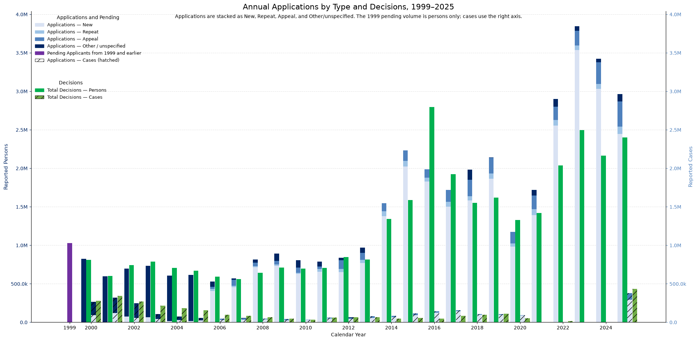
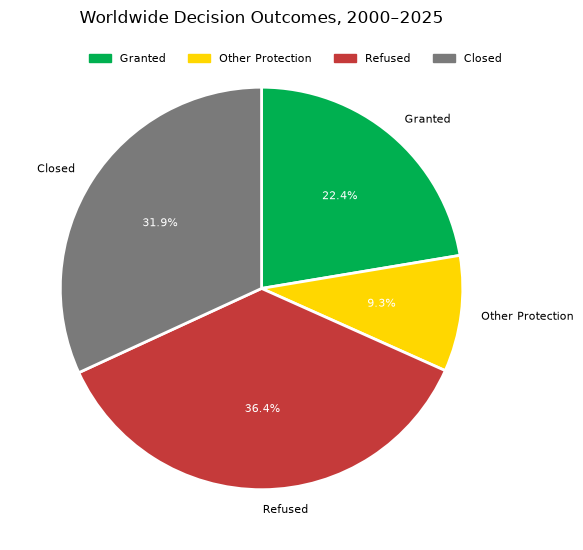

From public data
to a clearer picture.
Exploring asylum statistics and geographic data through thoughtful charts, interactive maps, and reproducible Python.
Read the asylum reportAsylum, in perspective.
Selected notebook outputs.
Read the complete report ?

Following the flow of applications.
New, repeat, appeal, and other applications alongside decisions. Persons and cases use separate axes; the opening 1999 pending stock is shown as context, rather than a year's applications.


How decisions are recorded.
A breakdown of recorded decisions across four outcomes, aggregated over 2000–2025. These shares describe the selected extract, not an individual applicant's probability of protection.

Comparing receiving countries.
A 2025 ranking by reported application volume. This exploratory chart combines persons and cases, which are different units; it is not a like-for-like count of people.
A place on the map.
Find NASA's Johnson Space Center in Houston, Texas. Pan, zoom, and select the marker to explore this Python-generated map.
Open full mapMap tiles and JavaScript libraries load from external providers. View the Python source ↗
The work behind
the visuals.
I'm Kathryn Hopkins. This collection brings together my Python chart-building and mapping examples, with the code and inputs available to explore on GitHub.
The asylum charts use the repository's UNHCR data snapshots. Source reporting, units, and coverage vary by country and year. Annual applications and decisions are different flows; their difference should not be treated as an observed backlog.
This is a static showcase. The Python and Jupyter analysis runs separately; the published chart images are snapshots from the executed notebook.